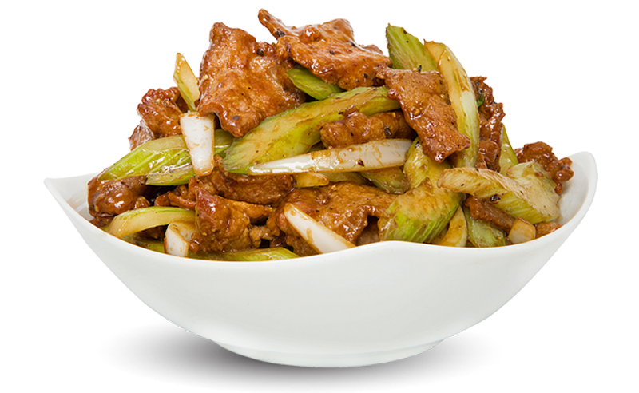
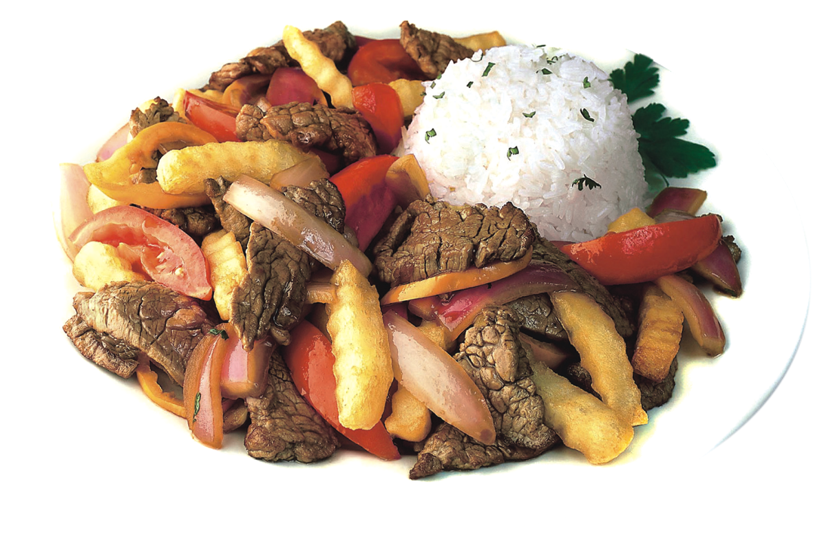
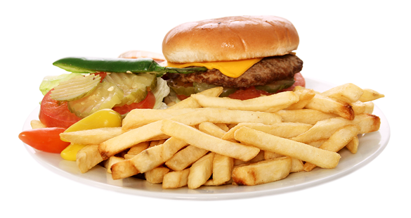
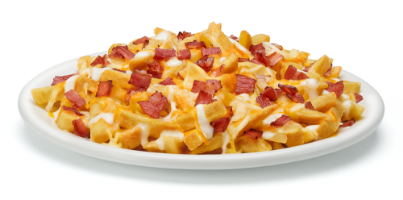
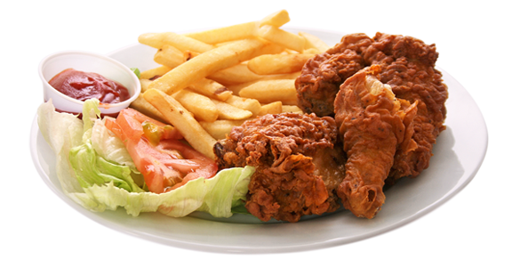

| Menús | Platos |
|---|---|
| Mixto: verdura y carne | 1 |
| Mixto: pattatas, carne, verdura y arroz | 2 |
| Plato bonito y combinado | 3 |
| Hamburgesa completa con patatas | 4 |
| Pattatas fritas con ketchup,mostaza y trozos de bacon | 5 |
| Alitas pattatas salsa y lechuga con salsa rosa | 6 |
Galeria...






Novedades...
La misión de Héroe de Alimentos es ayudar a los residentes del estado de Oregón de bajos ingresos mejorar su salud a través del mayor consumo de frutas y verduras. Héroe de Alimentos es una campaña de marketing social multicanal que tiene como objetivo lograr nuestros objetivos a través de trabajo al nivel de la educación directa al igual que trabajo en los niveles de políticas, sistemas y entornos.